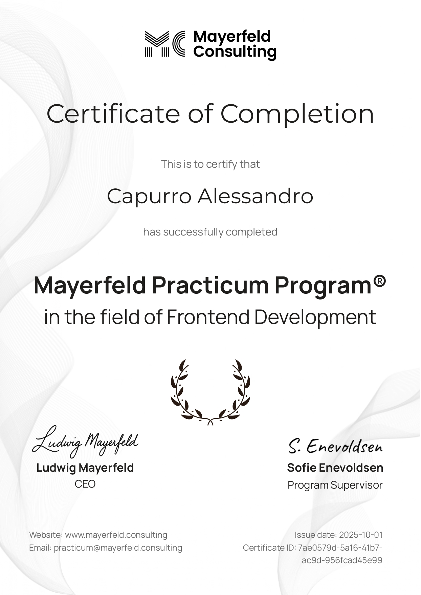

Le mie competenze:
Sia da autodidatta che grazie al mio percorso di studi, negli anni, ho avuto l'opportunità di studiare e approfondire linguaggi come: HTML5, CSS3, JavaScript, JQuery, PHP e framework come Bootstrap e React.
Cerco sempre di rimanere aggiornato alle ultime tecnologie e agli ultimi cambiamenti riguardo il settore della programmazione front-end, anche attraverso l'utilizzo di strumenti come IA e quant'altro, o attraverso corsi esterni di specializzazione, in modo da rimanere al passo con i tempi ed aggiornare le mie skill interpersonali.
Specializzazioni nel campo:
Nel settembre 2025 ho partecipato al Front-end Developer Practicum Program di Mayerfeld Consulting, un'esperienza che mi ha permesso di approfondire l'utilizzo dei tre principali linguaggi del web (HTML, CSS e JavaScript) e di migliorare le mie competenze nello sviluppo front-end. Durante il corso ho collaborato da remoto a diversi progetti di gruppo, utilizzando strumenti di version control come GitHub, ho acquisito una conoscenza più concreta delle dinamiche del lavoro in team (anche per migliorare le proprie capacità di comunicazione verbale), delle "best practices" del settore e dei flussi di lavoro tipici dell'industria.
Inoltre ho anche imparato le basi per il UI/UX design di interfacce moderne, fluide, responsive e consistenti in modo da fornire all'utente finale un'ottima "user experience".

Altre certificazioni:
Esternamente allo sviluppo web, ho anche lavorato sul miglioramento delle mie competenze linguistiche ottenendo il First Certificate in English (B2), che attesta un buon livello di padronanza della lingua inglese, utile sia in contesti accademici che professionali.
Cerchi un front-end developer?
Contattami o seguimi sui miei canali per rimanere in contatto: